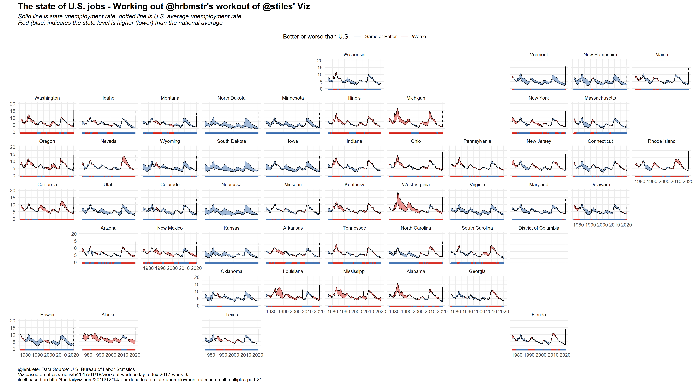
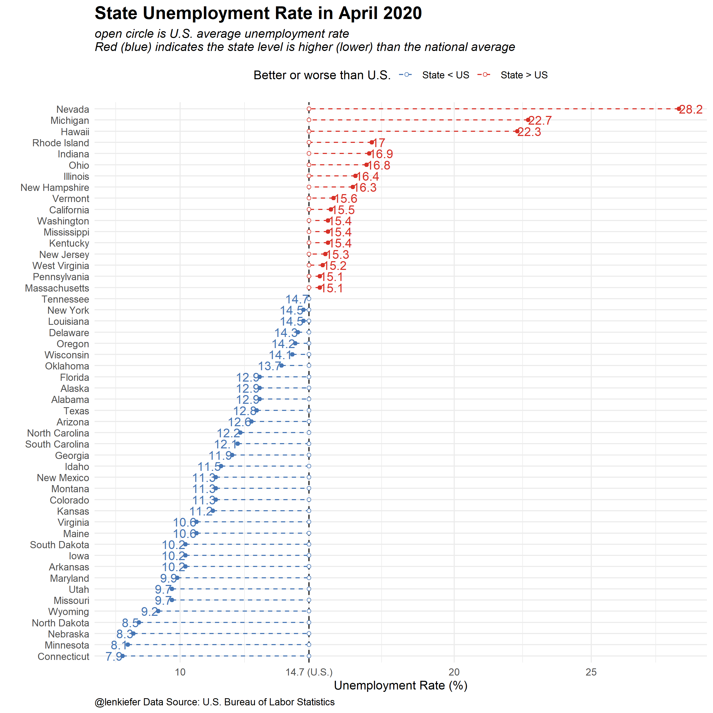

A couple years ago I posted R code for a remix of a remix of a US state unemployment rate chart.
Post Working on a workout. Some of the images were lost in a blog transition. We’ll update below.
Here’s an updated version:

And another remix focusing just on April 2020 (latest data).

R code
######################
## Load Libraries ##
######################
library(data.table)
library(quantmod)
library(tidyverse)
library(geofacet)
# Download data big file
ur.data<-fread("http://download.bls.gov/pub/time.series/la/la.data.1.CurrentS")
# Download series ids
ur.series<-fread("http://download.bls.gov/pub/time.series/la/la.series")
# We'll subset data
ur.list<-ur.series[area_type_code =="A" & #get states
measure_code == "3" & #get unemployment rate
seasonal == "S", #get seasonally adjusted data
c("series_id","area_code","series_title"),
with=F]
## Get state names and area crosswalk
ur.area<-fread("http://download.bls.gov/pub/time.series/la/la.area",
col.names=
c("area_type_code","area_code","area_text","display_level",
"selectable","sort_sequence"))
# merge data
ur.dt<-merge(ur.data,ur.list,by="series_id",all.y=T)
#create data variable
ur.dt[,month:=as.numeric(substr(ur.dt$period,2,3))]
ur.dt$date<- as.Date(ISOdate(ur.dt$year,ur.dt$month,1) ) #set up date variable
ur.dt<-merge(ur.dt,ur.area[,c("area_text","area_code"),with=F],by="area_code")
# Load national unemployment rate using quantmod and FRED database
# helpful reference https://jeffreybreen.wordpress.com/tag/quantmod/
unrate = getSymbols('UNRATE',src='FRED', auto.assign=F)
unrate.df = data.frame(date=time(unrate), coredata(unrate) )
# Drop some columns
ur.dt2<-ur.dt[,c("date","area_text","value"),with=F][,value:=as.numeric(value)]
## rename variables
ur.dt2<-dplyr::rename(ur.dt2, state=area_text)
ur.dt2<-dplyr::rename(ur.dt2, ur=value)
# merge national unemploymnent
ur.dt2<-merge(ur.dt2,unrate.df,by="date")
ur.dt2<-dplyr::rename(ur.dt2, ur.us=UNRATE) #rename UNRATE to ur.us
# create variables for use in ribbon chart
ur.dt2[,up:=ifelse(ur>ur.us,ur,ur.us)]
ur.dt2[,down:=ifelse(ur<ur.us,ur,ur.us)]
# drop D.C. and Puerto Rico (so we can have 50 plots in small multiple)
ur.plot<-ur.dt2[! state %in% c("Puerto Rico","District of Columbia")]
# Get list of states:
st.list<-unique(ur.plot$state)
# used in original post for animation, not needed here, too lazy to undo
ur.plot.us<-copy(ur.plot)[state=="Alabama"]
ur.plot.us[,state:="United States"]
ur.plot.us[,ur:=ur.us]
ur.plot.us[,up:=ur.us]
ur.plot.us[,down:=ur.us]
ur.plot2<-rbind(ur.plot,ur.plot.us)
# State geo facet plot ----
g1<-
ggplot(data=ur.plot2,aes(x=date,y=ur))+
geom_line(color="black")+
geom_line(linetype=2,aes(y=ur.us))+
geom_ribbon(aes(ymin=ur,ymax=down),fill="#d73027",alpha=0.5)+
geom_ribbon(aes(ymin=ur,ymax=up),fill="#4575b4",alpha=0.5)+
#facet_wrap(~state,ncol=10,scales="free_x")+
facet_geo(~state)+
scale_y_continuous(limits=c(0,20))+
theme_minimal()+
theme(legend.position="top",
plot.caption=element_text(hjust=0),
plot.subtitle=element_text(face="italic"),
plot.title=element_text(size=16,face="bold"))+
labs(x="",y="",
title="The state of U.S. jobs - Working out @hrbmstr's workout of @stiles' Viz",
subtitle="Solid line is state unemployment rate, dotted line is U.S. average unemployment rate\nRed (blue) indicates the state level is higher (lower) than the national average",
caption="@lenkiefer Data Source: U.S. Bureau of Labor Statistics\nViz based on https://rud.is/b/2017/01/18/workout-wednesday-redux-2017-week-3/,\nitself based on http://thedailyviz.com/2016/12/14/four-decades-of-state-unemployment-rates-in-small-multiples-part-2/")+
geom_rug(aes(color=ifelse(ur>ur.us,"Worse","Same or Better")),sides="b")+
scale_color_manual(values=c("#4575b4","#d73027"),name="Better or worse than U.S.")
g1
# Static chart ----
g2 <-
ggplot(data=filter(ur.plot,date==max(date)) %>%
mutate(statef=fct_reorder(state,ur)),
aes(x=ur,y=statef,
color=ur>ur.us,
label=round(ur,1)))+
geom_vline(aes(xintercept=ur.us),linetype=2)+
geom_point()+
geom_segment(linetype=2, aes(yend=statef,xend=ur.us))+
geom_point(shape=21,fill="white", aes(x=ur.us))+
geom_text(show.legend=FALSE, aes(hjust=ifelse(ur>ur.us,0,1)))+
scale_x_continuous(breaks=c(5,10,14.7,20,25),
labels=c("5","10","14.7 (U.S.)", "20","25"))+
scale_color_manual(values=c("#4575b4","#d73027"),
labels=c("State < US","State > US"),
name="Better or worse than U.S.")+
theme_minimal()+
theme(legend.position="top",
plot.caption=element_text(hjust=0),
plot.subtitle=element_text(face="italic"),
plot.title=element_text(size=16,face="bold"))+
labs(x="Unemployment Rate (%)",
y="",
title="State Unemployment Rate in April 2020",
subtitle="open circle is U.S. average unemployment rate\nRed (blue) indicates the state level is higher (lower) than the national average",
caption="@lenkiefer Data Source: U.S. Bureau of Labor Statistics")
g2